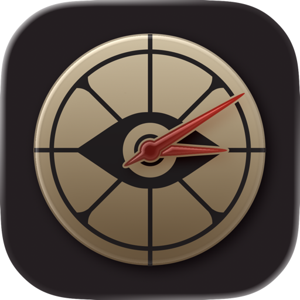

Free overlay for Windows
Deadclock sits on top of Deadlock and reads the match clock straight off your screen — so every camp, buff and boss timer stays in sync on its own. Start a game and it's already counting.
Windows 10 / 11 · No account, no telemetry · Also on iPhone
What it does
Deadlock is a game of precision. Deadclock keeps you a step ahead of every objective without asking you to remember when the match started.
It reads Deadlock's own match clock off-screen about once a second and corrects its timers to match. Nothing to start, nothing to nudge.
It spots the kill on the HUD and starts the respawn timer on its own — 7, 6 then 5 minutes by kill number — plus the 4-minute rejuvenator.
Screen flashes and an alert sound land before the event, not on it. Set your own lead time, colors and sound in Settings.
Lock the panel and it goes click-through — it can never steal a mouse input from the game. Unlock from the tray icon or a hotkey.
Keep it small with just the next timer or two, then expand to the full list and detail when you're planning a push. Drag it anywhere.
It pulls the same timer content as the iOS Deadclock app, so when the game changes the timers change with it — no reinstall.
Getting set up
Download, run, launch Deadlock. The overlay appears when the game does and hides when you quit — no need to keep a window around.
An overlay can only draw over the game in borderless windowed (windowed fullscreen) mode — exclusive fullscreen hides it. Deadlock ships borderless by default, so this is only a problem if you changed it.
Deadclock isn't code-signed — certificates cost money and this is a free community tool — so SmartScreen may warn you the first time. Click More info → Run anyway. The source is on GitHub if you'd rather read it first.
Default hotkeys
| Action | Shortcut |
|---|---|
| Lock / unlock click-through | Ctrl Alt L |
| Show / hide overlay | Ctrl Alt D |
| Resync clock now | Ctrl Alt R |
| Pause / resume clock | Ctrl Alt P |
Download
Windows 10 or 11, 64-bit. Pick whichever you prefer — they're the same app.
Recommended
Installs per-user, so no admin password. Optional desktop shortcut and start-with-Windows, and it updates cleanly over itself.
Download installerNo install
One .exe, double-click and go. The .NET runtime is bundled, so there's
nothing else to install and nothing left behind.

The original Deadclock: the same timers, plus soul values and patch notes, on a second screen next to you.